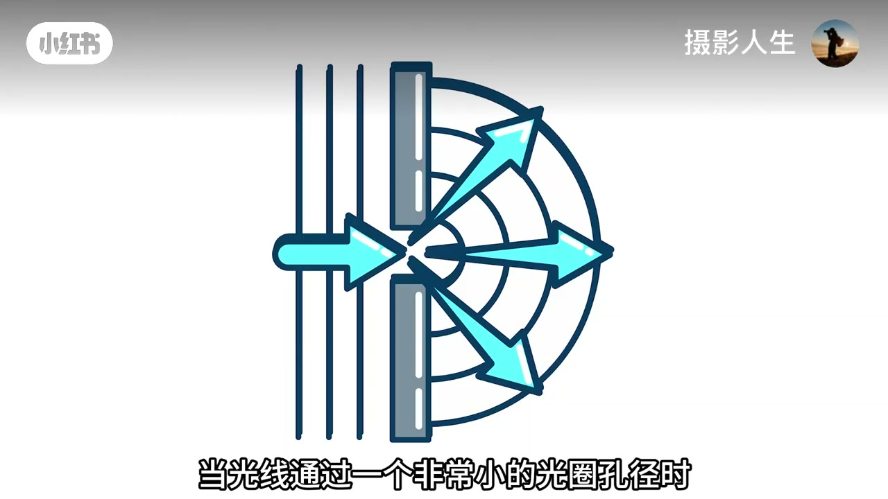
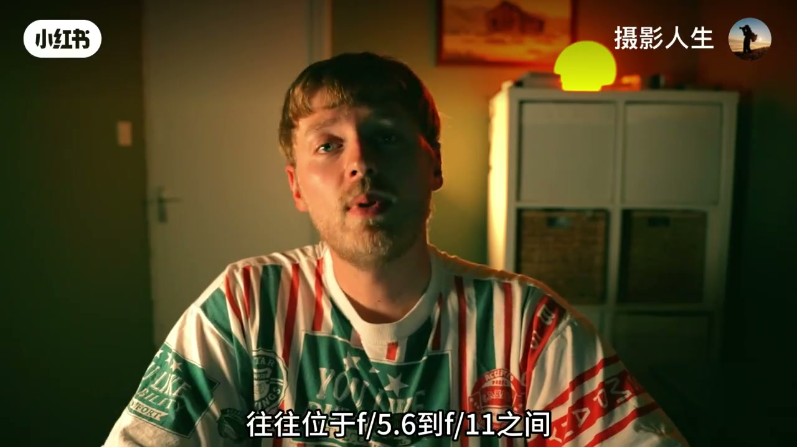
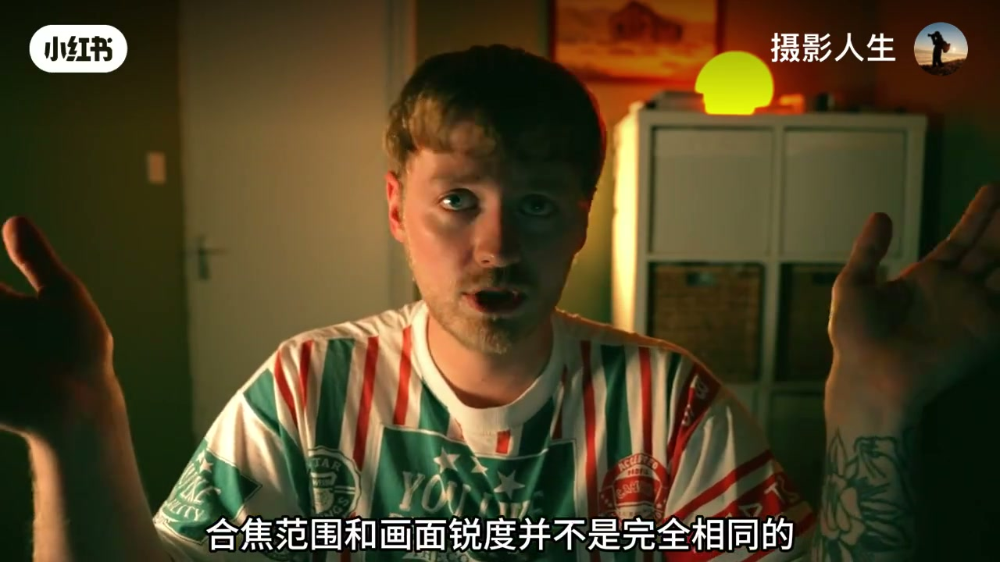
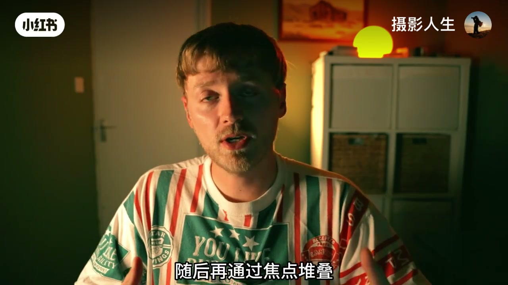
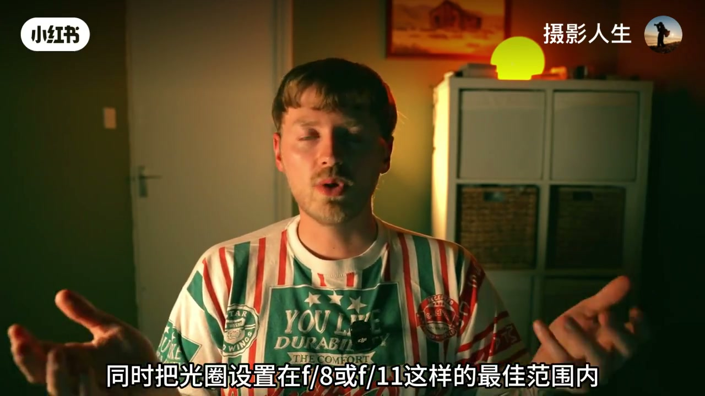
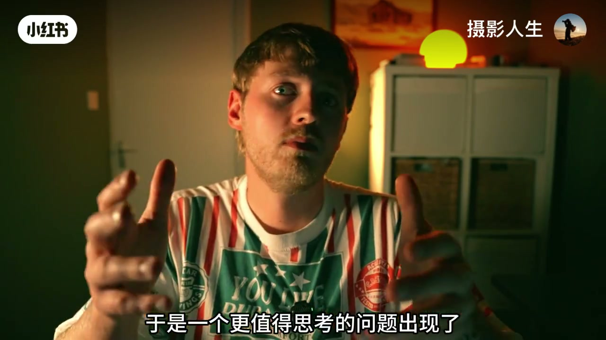
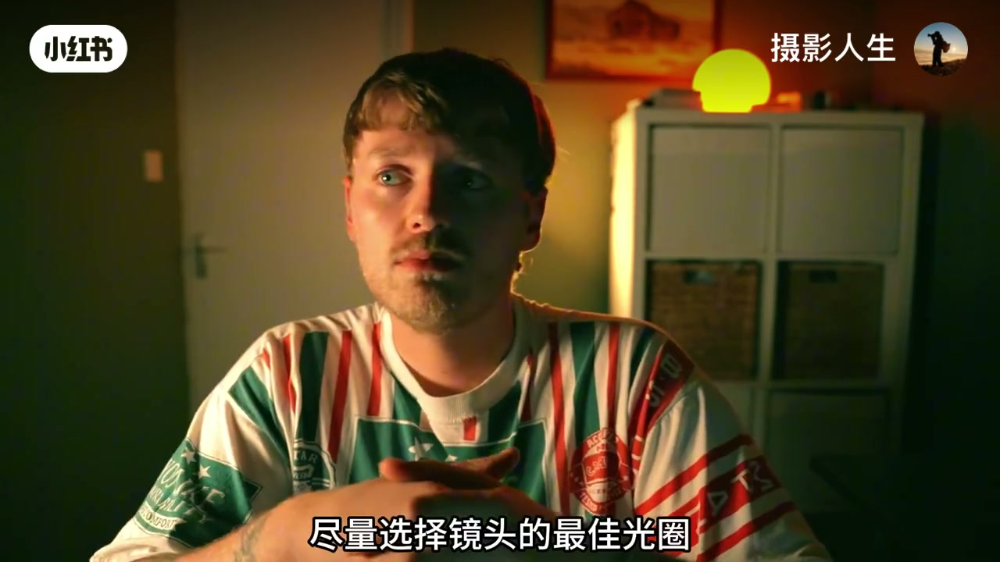

内容要点
账号「摄影人生」以约六分钟口播，纠正初学者对锐度的根深蒂固误解：大光圈带来浅景深、小光圈扩大合焦范围，这都成立；但「把光圈缩到 F22 就一定最锐」并不成立——过小光圈会引入衍射，让细节变软。视频给出多数镜头的最佳光圈区间（约 F5.6–F11）、风光常用的焦点堆叠，以及 ISO/三脚架在曝光三角里的位置，最后强调锐度只是画面质量的一部分，应按表达主动选择。以下为视频作者观点纪实；口播 ASR 中「眼射/相差/三角架」等已按语境校正为「衍射/像差/三脚架」。
知识结构
合焦多少与照片有多锐利是两件事；不必执着每张绝对锐利。
光圈过小，光波弯曲干扰，F22 虽「都在焦点里」却未必处于镜头最佳锐利状态。
多数镜头最锐约在 F5.6–F11：躲开大光圈像差与小光圈衍射。
风光在 F8/F10 分段对焦再堆叠，兼顾前后清晰与最佳锐度。
定焦常比变焦更易锐；尽量低 ISO；慢门靠三脚架稳住。
慢门朦胧合法；商业要锐可以追；最终看画面是否符合想说的话。
想要更锐：定焦 + 最佳光圈 + 必要时三脚架/堆叠；但先弄清「合焦≠锐度」，再决定这张照片到底要不要极致清晰。
00:00–00:38开场：浅景深与「缩到F22就最锐」
讲述者以「很多摄影初学者都会有一个根深蒂固的认知」开场：用 F1.8 是为了拿浅景深（ASR 作「前景深」，按语境校正），缩到 F22 则是为了让画面「更清晰」。他自己也曾这么想，后来发现远没有这么简单。
大光圈确实能让主体从背景分离；小光圈也确实能让更多区域落入焦点范围。但「画面里有多少东西合焦」和「照片到底有多锐利」是两件不同的事——甚至到最后，摄影师未必需要执着让每一张都绝对锐利。
00:38–01:21衍射：合焦变大不等于更锐
基础课没错：光圈越大景深越浅，光圈越小景深越深，更多区域处于焦点范围——于是很多人自然推出「缩到最小就一定最锐」。视频明确说：这种理解并不完全正确。
当光圈缩得过小时，会出现衍射（ASR「眼射」）：光线通过极小孔径时，光波弯曲并相互干扰，最终降低画面锐利程度。因此 F22 可以让更多区域「看起来在焦点里」，但这些区域并不一定处在镜头能呈现的最佳锐利状态。

01:21–02:23最佳光圈甜蜜点 F5.6–F11
镜头到底在什么光圈下最锐？讲述者引入「最佳光圈区间」：不同镜头表现不同，但多数镜头最锐往往落在约 F5.6 到 F11。过大时易出像差（ASR「相差」）——边缘画质下降、色散、紫边；过小时又吃衍射。F5.6–F11 常处在两者之间的甜蜜点。

这里必须再拆一层：合焦范围 ≠ 画面锐度。在 F22，整幅从前景到背景也许都在焦点范围内，但因衍射，实际细节可能不如 F8 或 F11 锐利。

02:23–02:52焦点堆叠：风光为何不爱一味F22
许多风光摄影师不会简单用 F22 拍一张「全景深」照片，而是在镜头最佳光圈（如 F8 或 F10）分别对前景、中景、背景对焦，再靠焦点堆叠融合成一张。好处是：前后都清晰，同时每个区域尽量保住镜头最佳锐度。

02:52–03:56定焦、ISO与三脚架的平衡
锐度因子不止光圈。一般而言定焦往往比变焦更容易锐——光学结构相对简单，光线穿过的镜片与复杂结构更少。此外，无论胶片还是数码，想要干净锐利的画面，通常应尽可能使用较低 ISO。
但降 ISO 可能逼你开大光圈或降低快门：开大可能进入像差更明显的区域，降快门则手持易抖——这就是摄影里常面对的平衡。也因此很多风光摄影师使用三脚架：尽量低 ISO、光圈放在 F8/F11 一类最佳范围，进光量有限时用更慢快门，三脚架负责稳住机身。

03:56–05:48锐度不是唯一目标
讲述者话锋一转：锐利不应成为摄影唯一追求。他自己常拍慢快门，并不过分在意极致锐利——慢快门本身带来运动感、纹理与朦胧梦幻；这类作品里即便为了更慢快门而用 F22，也未必「破坏」照片，因为目标本就不是绝对清晰。

于是问题变成：为什么一定要让照片那么锐利？专业商业摄影，或个人就是喜欢干净、细节丰富，追求锐度完全没问题；但一张照片是否优秀，并不取决于它是否绝对锐利。锐利只是画面质量的一部分；打动人的往往还有构图、光线、情绪、色彩与想表达的内容。适当柔软可以梦幻空灵，适当纹理可以更自然——它们不是「比锐度差」，只是不同视觉选择。
摄影不存在简单的「锐就好、不锐就差」。真正重要的是理解技术原理，再根据想表达的内容主动选择。若确实想要更锐：可用定焦、尽量选最佳光圈、必要时配合三脚架——但不必每张都这样拍。掌握更多知识，就拥有更多选择；最终一张照片是否锐利并不是最重要的，最重要的是画面是否真正符合摄影师想表达的东西。

转录区保留 Whisper 原始分段（含「眼射」「相差」「三角架」等识别误差）；正文已按术语表校正并注明。